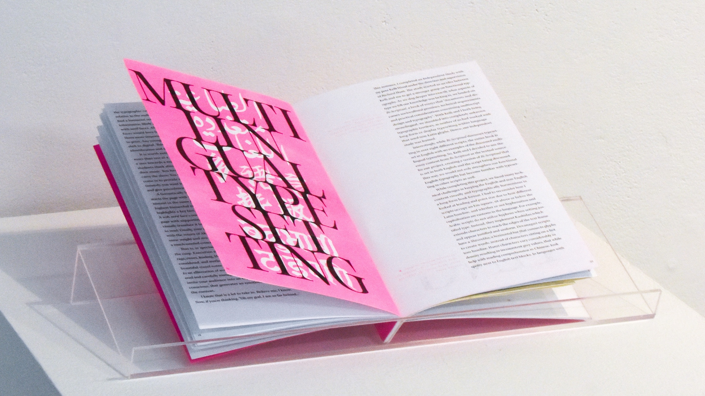
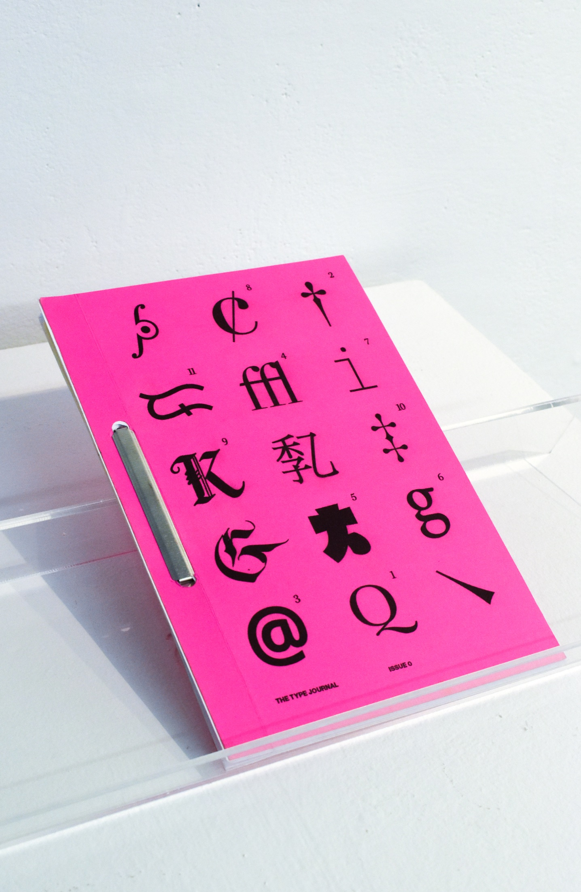
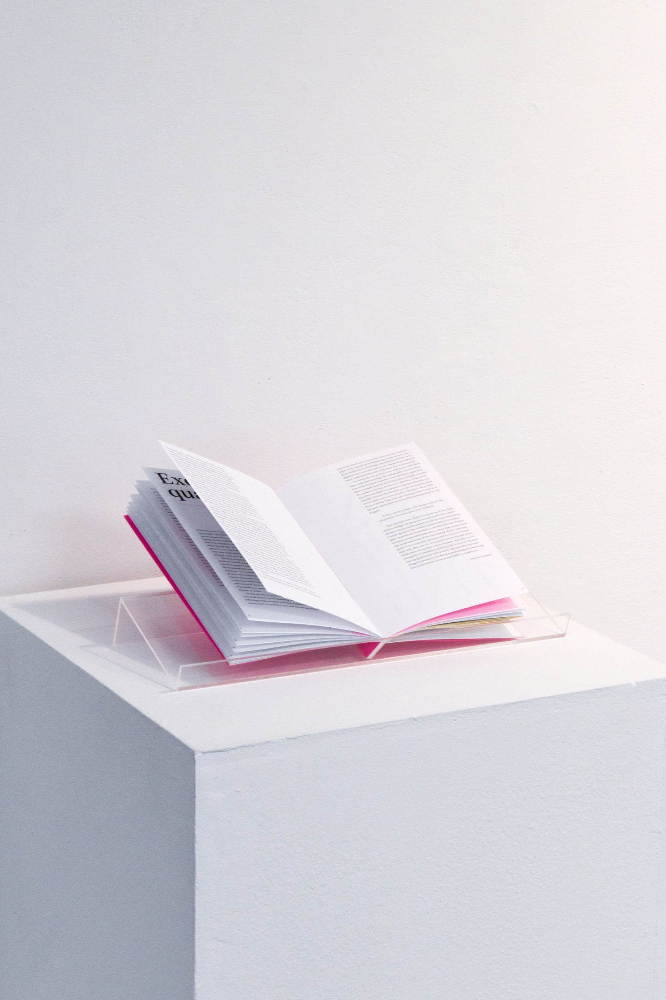
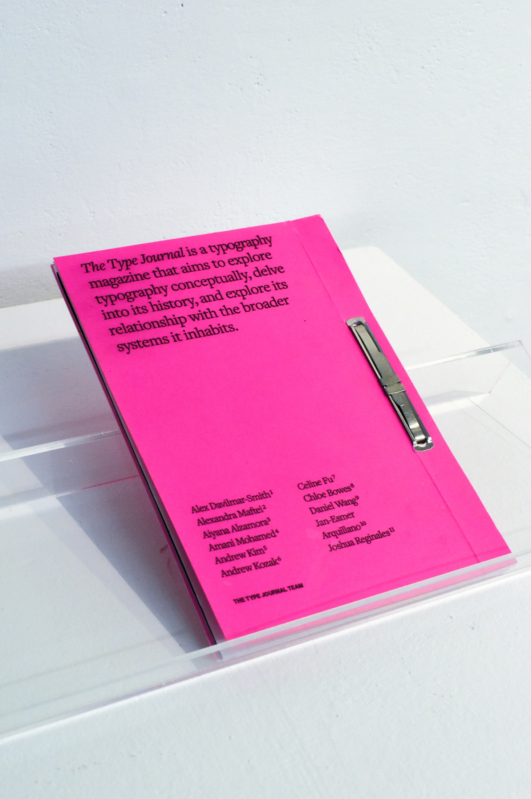
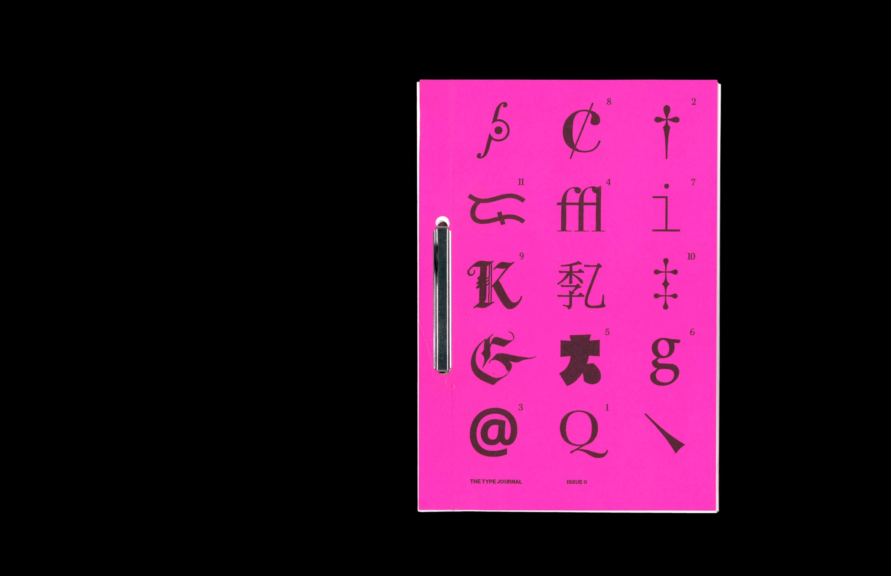

The Type Journal
Editor-in-Chief / Creative Director
- Editorial direction
- Publication design
- Typesetting
The Type Journal Issue 0 is a riso-printed student-led publication centred on typography and experimental editorial design. I led its editorial and visual direction, designing the cover and developing the layout and typographic system while overseeing content and final production. The finished journal was later exhibited at Atelier Next Door and Swash & Serif in Toronto.




The Type Journal binding
The Type Journal featured several foldout posters submitted by students and the editorial team. The need to accommodate these posters gave birth to one of Type Journal’s more distinctive features: its metal prong binding. This feature allowed us to integrate the posters within the book whilst allowing readers to remove them in a non-destructive way.